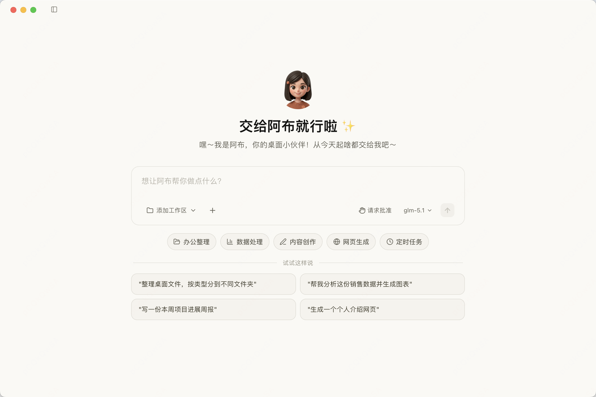
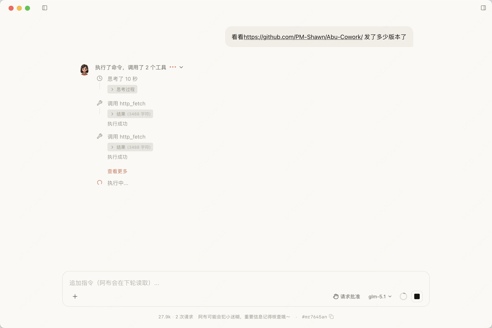
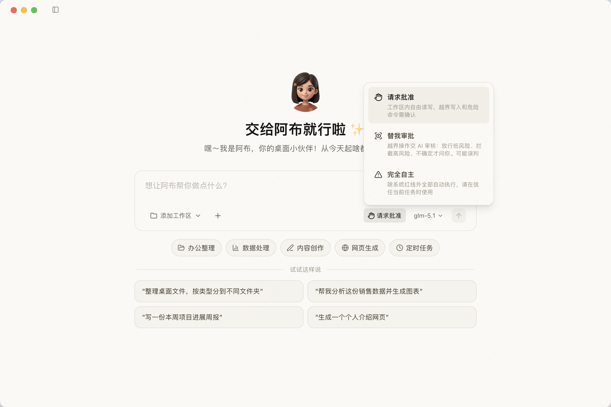
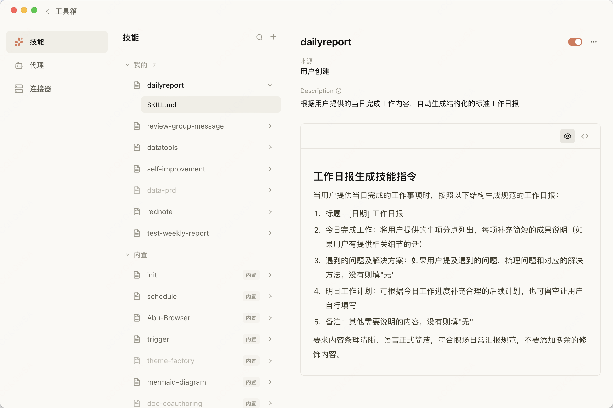
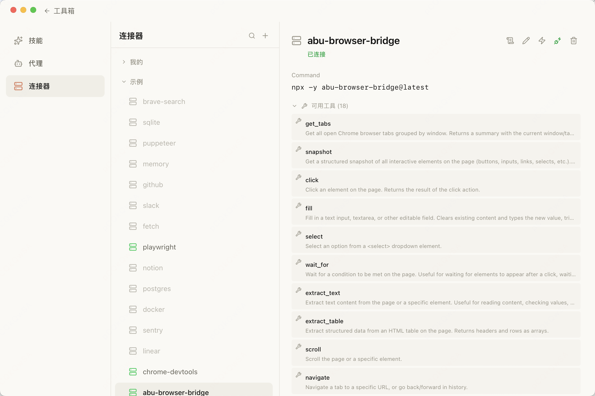
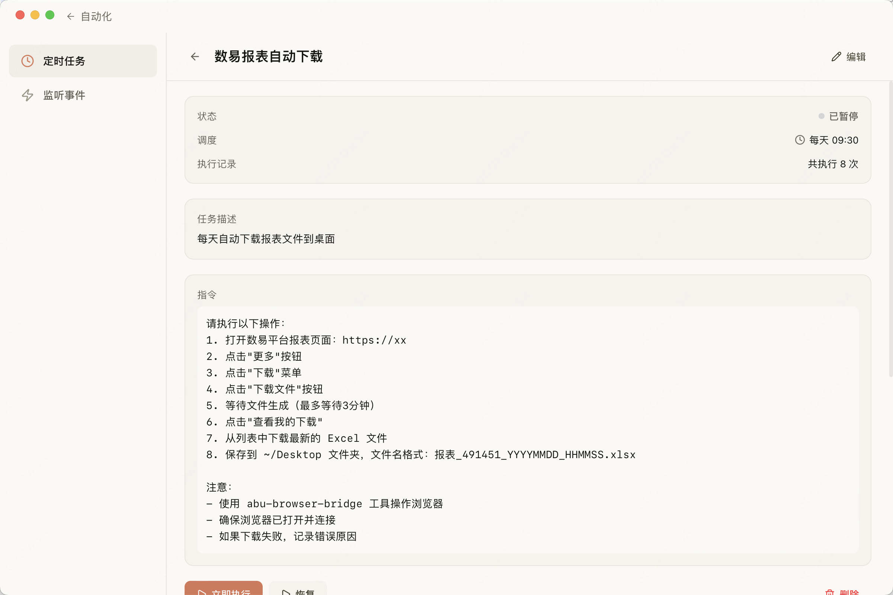
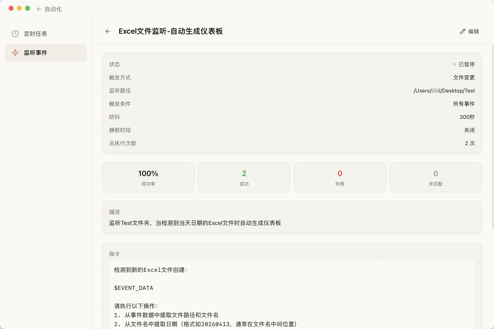
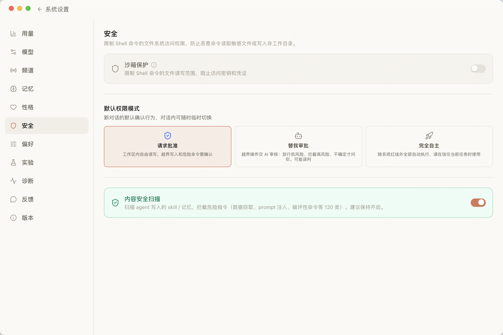

产品预览
简洁直观的界面，强大灵活的能力

欢迎页
自然语言输入，对话即指令

任务执行
自主规划步骤，调用工具完成复杂任务

权限控制
文件访问需用户授权，安全可控

IM 频道对话
在飞书 / 钉钉中 @阿布 即可交互

Skill 技能
内置 28 个技能，支持自定义扩展

MCP 连接器
一键接入 Playwright、GitHub 等外部工具

定时任务
Cron 定时执行，让阿布每天自动工作

触发器 / 值班
HTTP、文件变更、IM 消息等事件自动触发

个人记忆
记住你的偏好和工作习惯

性格系统（Soul）
三档主动度预设 + SOUL.md 自定义语气与回复风格

诊断面板
AI 服务 / MCP / 技能 / 网络一键自检 + 诊断包导出

内容安全扫描
120+ 类风险拦截，三档权限模式按场景调节
加入社区
关注动态、交流心得、一起让阿布变得更好
微信交流群
扫码添加作者微信，备注「Abu」拉你进群